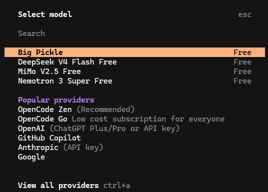
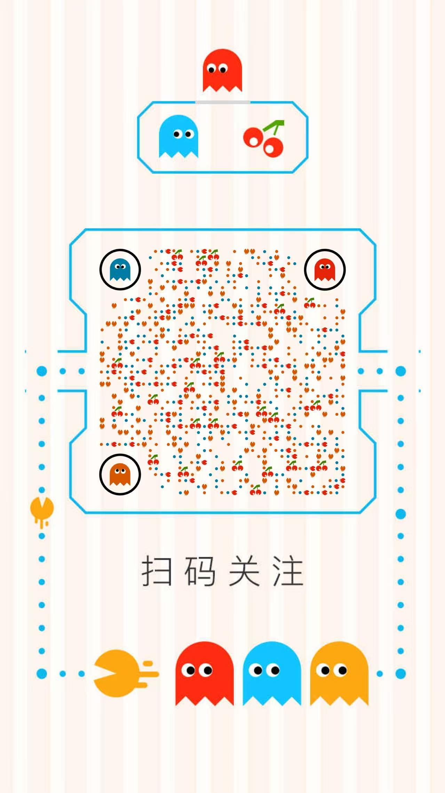

零基础小白也能轻松上手的AI编程助手
OpenCode 是一个开源的AI编程助手，它可以：
.msi 文件cmd 并按回车node --version
如果看到类似 v20.11.0 的版本号，说明安装成功！
.pkg 文件node --version
看到版本号就说明成功了！
cmd 并按回车在黑色窗口中，复制以下命令，然后粘贴到窗口中：
npm install -g opencode-ai
你会看到类似这样的输出：
added 1 package in 15s
输入以下命令，然后按回车：
opencode --version
如果看到版本号（例如 1.1.50），说明安装成功！
输入以下命令，然后按回车：
curl -fsSL https://opencode.ai/install | bash
opencode --version
现在让我们用OpenCode内置的免费模型，快速体验AI编程助手的强大功能！
Windows用户：在命令提示符中输入：
opencode
Mac用户：在终端中输入：
opencode
启动后，OpenCode会引导你选择AI模型。你会看到一个界面，让你选择模型提供商。
如果你没有看到免费选项，可以：
/models 命令
现在你可以在OpenCode界面中输入你的需求了！试试这些简单的命令：
创建一个Hello World程序：
帮我创建一个Python文件，实现Hello World功能
查看文件内容：
当前目录下有哪些文件？
修改代码：
把这个Python文件改成输入用户名并打招呼
| 命令 | 功能 |
|---|---|
/help |
查看帮助 |
/models |
切换模型 |
/clear |
清空当前对话 |
/compact |
压缩对话历史 |
| Ctrl + C | 退出当前操作 |
| Ctrl + L | 清屏 |
如果你想使用更强大的AI模型（如Claude、GPT等），可以按照以下步骤配置。
你需要从AI服务商获取API密钥：
| 服务商 | 模型 | 获取方式 |
|---|---|---|
| Anthropic | Claude | https://console.anthropic.com/ |
| OpenAI | GPT | https://platform.openai.com/ |
| DeepSeek | DeepSeek | https://platform.deepseek.com/ |
| 阿里云 | 通义千问 | https://bailian.console.aliyun.com/ |
Windows用户：
mkdir %USERPROFILE%\.config\opencode
Mac用户：
mkdir -p ~/.config/opencode
配置文件位置：
C:\Users\你的用户名\.config\opencode\opencode.json~/.config/opencode/opencode.json使用记事本或其他文本编辑器创建 opencode.json 文件，内容如下（以阿里云百炼为例）：
{
"$schema": "https://opencode.ai/config.json",
"provider": {
"alibaba": {
"npm": "@ai-sdk/anthropic",
"options": {
"apiKey": "你的API密钥",
"baseURL": "https://dashscope.aliyuncs.com/compatible-mode/v1"
},
"models": {
"qwen-max": {
"name": "Qwen-Max",
"attachment": true
}
}
}
},
"model": "alibaba/qwen-max"
}
"你的API密钥" 替换成你从阿里云百炼获取的真实 API Key。
配置完成后，关闭当前OpenCode，重新启动即可使用新的模型。
opencode
错误现象：
无法加载文件 C:\Program Files\nodejs\npm.ps1，因为在此系统上禁止运行脚本。
解决方案：
Set-ExecutionPolicy RemoteSigned
Y 确认解决方案：
sudo
sudo npm install -g opencode-ai
解决方案：
opencode解决方案：
使用国内镜像源安装：
npm install -g opencode-ai --registry=https://registry.npmmirror.com
试试在下面的终端中点击按钮，体验 OpenCode 的工作方式：
